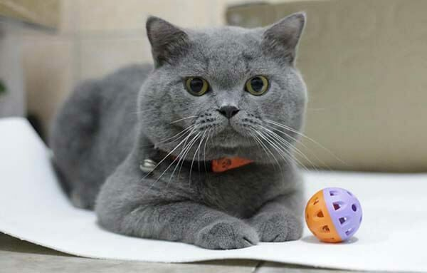
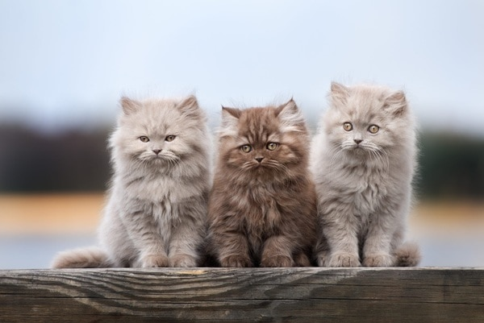
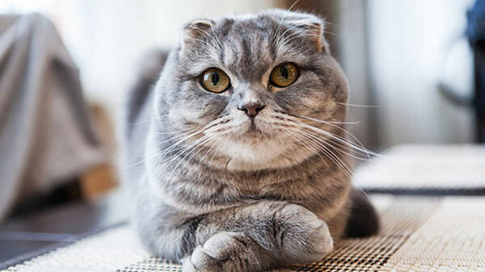
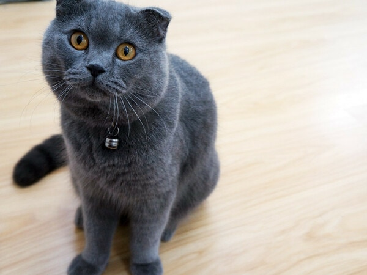
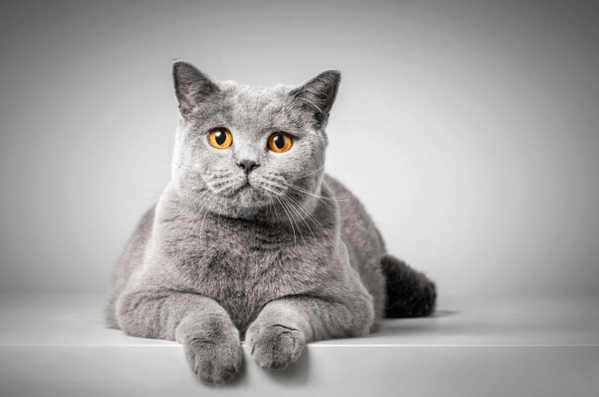

Mèo anh lông dài
Mèo Anh hiện là loài mèo được nuôi phổ biến tại nhiều gia đình trên thế giới trong đó có Việt Nam. Mèo Anh được phân chia thành 2 loại là mèo Anh lông ngắn (British Shorthair) và mèo Anh lông dài (British Longhair). Những chú mèo Anh thuộc hai giống này đều sở hữu ngoại hình vô cùng dễ thương, vì thế được rất nhiều người yêu thích. Họ không chỉ coi những chú mèo Anh là thú cưng mà chúng còn giống như những thành viên trong nhà.
1. Nguồn gốc của mèo Anh lông ngắn
Mèo Anh lông ngắn còn có tên gọi là mèo Aln, loài mèo có lịch sử lâu đời nhất nước Anh. Chào đời nhờ sự phối kết hợp ngẫu nhiên của giống mèo Ai Cập cổ đại và những chú mèo đường phố ở Anh. Theo thông tin ghi chép lại, từng có một thời gian mèo Anh lông ngắn tưởng chừng như đứng bên bờ vực tuyệt chủng do việc nhân giống khó khăn và sự du nhập của các loài mèo khác. Nhưng thật may mắn, những người yêu mèo đã tìm cách bảo tồn loài mèo này, nỗ lực lai tạo và giữ gìn giống mèo Aln thuần chủng hiện nay. Mặc dù hiện nay mèo Aln khá phổ biến nhưng vì quá trình nhân giống cũng không hề đơn giản nên giá mèo Anh lông ngắn cũng khá đắt.

2. Đặc điểm ngoại hình

Mèo Anh lông ngắn có cơ thể tương đối tròn trịa chứ không dài người, khung xương to kết hợp cùng với bộ ngực lực lưỡng khiến chúng trông thật săn chắc, khỏe khoắn. Tỷ lệ giữa chiều dài cơ thể và 4 chiếc chân lại khá chênh nhau. Mèo Aln sở hữu 4 chiếc chân ngắn cũn cỡn, với 4 quả măng cụt to tròn, phần đệm thịt rất dày và mềm. Nhờ vậy mà mỗi bước đi của chúng đều nhẹ nhàng, uyển chuyển hơn, không phát ra âm thanh. Phần đuôi được bao phủ bởi một lớp lông siêu dày. Miệng mèo lúc nào cũng chúm chím nhỏ xinh, má phúng phính như hai chiếc bánh bao được đắp lên mặt, đôi tai nhỏ và mỏng so với kích cỡ của đầu lúc nào cũng dựng đứng. Điểm ấn tượng nhất của mèo Anh lông ngắn nằm ở đôi mắt to tròn, long lanh hai màu xanh hoặc vàng đồng trông vô cùng dễ thương.
Màu sắc lông của mèo Anh lông ngắn khá đa dạng, hiện nay trên thị trường Việt Nam có một số màu phổ biến như: xám, xám xanh, vàng, lilac,… Ngoài ra còn xuất hiện các màu hiếm như tabby, bicolor, himalayan, đen, tam thể, vằn, golden hoặc silver,… Giá mèo Anh lông ngắn có màu lông đặc biệt sẽ cao hơn những chú có bộ lông màu cơ bản.
Lông của mèo Aln lúc nào cũng bóng bẩy, mượt mà. Cảm giác khi chạm vào, vuốt ve chúng như đặt tay lên một tấm thảm nhưng vậy. Trọng lượng trung bình một chú mèo Anh lông ngắn khi trưởng thành dao động từ 4 – 8,5 kg.
3. Tính cách của mèo Anh lông ngắn
MèNhững chú mèo Anh đều rất hiền tính, không thích sự ồn ào, náo nhiệt, đặc biệt là sống rất tình cảm, quấn chủ, thích được ôm ấp, vuốt ve. Nếu hồi nhỏ có chút tinh nghịch thì khi trưởng thành, chúng chỉ thích nằm một chỗ tận hưởng không gian yên bình, lim dim đôi mắt và ngủ. Bản tính các “boss” là thích độc lập, vì thế nếu bạn bận rộn không có thời gian chơi cùng thì chỉ cần đưa ra một quả bóng chúng sẽ đùa nghịch cả ngày không biết chán

Tuy nhiên, một đặc điểm được coi là tính xấu của những chú mèo Anh đấy chính là lười vận động. Đây chính là nguyên nhân khiến nhiều chú mèo Anh bị béo phì. Những ai mua mèo đều phải thường xuyên rèn cho chúng có thói quen vận động nếu không muốn chúng bị thừa cân.
4. Cách nuôi mèo Anh

Những chú mèo Anh dễ hòa nhập và không quá kén ăn, tuy nhiên để nuôi một chú mèo trưởng thành, bạn vẫn cần phải lưu ý một số điểm sau:
Thức ăn mà mèo ăn được rất đa dạng, từ những món ăn ướt do bạn tự nấu cho đến đồ ăn khô như hạt, thức ăn đóng gói sẵn, chúng đều vô cùng yêu thích. Nhưng dù là loại thức ăn nào, bạn cũng cần bổ sung đầy đủ các dưỡng chất như protein, vitamin, chất xơ, tinh bột,… Thịt gà, thịt bò, nội tạng, trứng, phomai,… đều là những món ăn khoái khẩu của các “boss”.
Với loại thức ăn cho mèo đóng hộp/gói có sẵn trên thị trường thường có hàm lượng tinh bột khá cao. Vì vậy bạn nên lựa chọn những hãng thức ăn trong bảng thành phần chứa ít chất béo và tinh bột để tránh cho mèo không bị béo phì.
Với loại thức ăn ướt: pate và phomai là hai món ăn tốt cho sự phát triển của những chú mèo Anh. Bạn có thể mua ở ngoài hàng hoặc tự nấu để tiết kiệm hơn. Những món ăn tự nấu cần được đảm bảo nấu chín, không để lên men, không có sữa bò hoặc socola. Vì đây là những thứ gây ảnh hưởng không tốt tới tới hệ tiêu hóa của mèo.
Chăm sóc sức khỏe
Không chỉ nuôi mèo Anh mà bất kể giống mèo nữa đi nữa, bạn vẫn nên thực hiện tốt một số việc sau để sức khỏe của chúng luôn ở trạng thái tốt nhất:
- Tiêm phòng cho mèo khi còn bé, đầy đủ 3 mũi tiêm và trước khi mèo 1 tuổi.
- Thường xuyên đưa chúng đi khám định kỳ 6 tháng/lần
- Thường xuyên đưa chúng đi khám định kỳ 6 tháng/lần
Vệ sinh những vị trí dễ bám bẩn và vi khuẩn như như tai, mắt, mũi, miệng và cằm. Sử dụng dung dịch rửa, vệ sinh đặc biệt và duy trì công việc này khoảng 1 tuần/lần.
Bộ lông của mèo Anh tương đối dày, nhất là mèo Ald lại có bộ lông rất dài, chính vì thế bạn cần chải lông thường xuyên cho chúng để tránh bết dính, sạch chấy rận và bụi bẩn.
5. Giá mèo Anh lông dài là bao nhiêu?

Mua mèo Anh lông ngắn và mèo Anh lông dài ở đâu thì đảm bảo, yên tâm luôn là nỗi băn khoăn của rất nhiều người. Trên thị trường hiện nay, bạn có thể dễ dàng sở hữu một bé mèo Aln, Ald khi tới các trại mèo hoặc tiệm bán thú cưng ở Hà Nội, Tp. Hồ Chí Minh,...
Ngoài ra, bạn cũng có thể tìm đến các group mèo cảnh để tìm mua mèo Anh lông ngắn và mèo Anh lông dài thuần chủng.

Những chú mèo Aln được phối giống trong nước sẽ có mức giá khá “hạt dẻ”, chỉ từ 4 – 7 triệu đồng.
Những bé mèo Anh lông ngắn được nhập khẩu trực tiếp từ châu Âu có giá khá “chát” lên tới 2000$. Tuy nhiên, chúng sẽ được đảm bảo về gia phả, giấy tờ đầy đủ, minh bạch, đạt tiêu chuẩn về độ thuần chủng, sức khỏe. Để mua được mèo Anh lông ngắn dòng này bạn cần liên hệ đặt trước với bên bán.
Với mức độ phổ biến của giống mèo này tại Việt Nam, không khó để tìm được những nơi rao bán mèo Anh lông dài tại Hà Nội hay Tp. Hồ Chí Minh và các tỉnh thành khác trên cả nước.